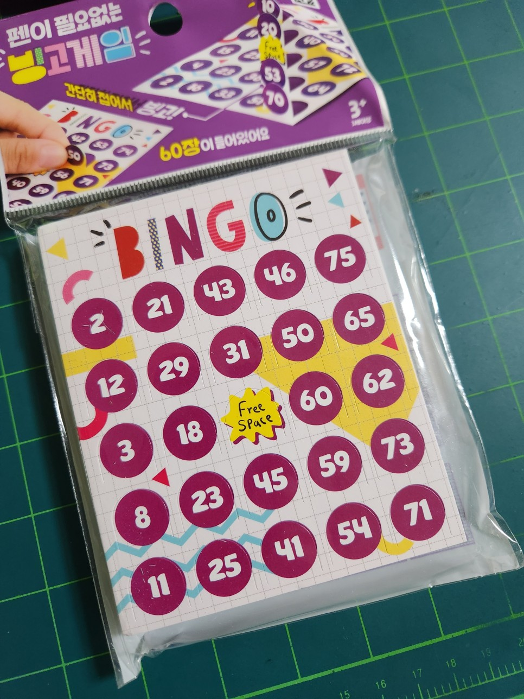

게임으로 돌아가기
※ 게임 방법
- 몇 줄을 완성시켜야 빙고가 성립하는지 정합니다(예: 1줄, 2줄, 3줄...)
- 빙고가 완성될 때 까지 숫자를 부릅니다.
- 진행자가 임의로 숫자를 고릅니다. 숫자표를 클릭하여 기록합니다. 또는
- 참여자가 임의로 숫자를 고릅니다. 숫자표를 클릭하여 기록합니다. 또는
- 랜덤 뽑기를 클릭하여 숫자를 고릅니다.
- 빙고를 최초로 완성시킨 자가, 본인이 완성한 숫자를 차례차례 불러줍니다. 이 때, 진행자는 모든 숫자가 기록된 숫자에 포함되어 있는지 확인합니다.
※ 버전정보
- v1.0 기본 기능 구현
- v1.1 숫자 범위 수정(변경 전 : 1 ~ 100, 변경 후 : 1 ~ 75), 버전 페이지 생성